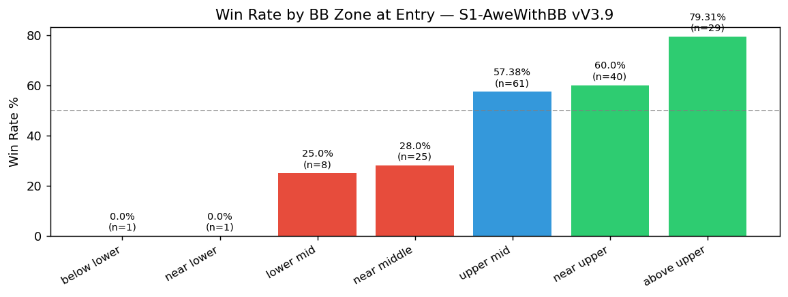
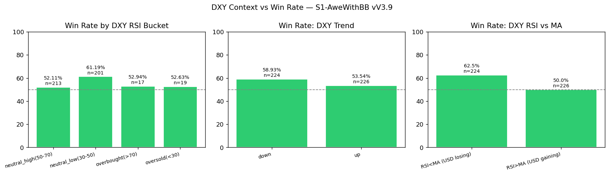
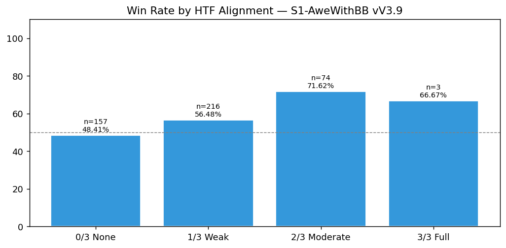
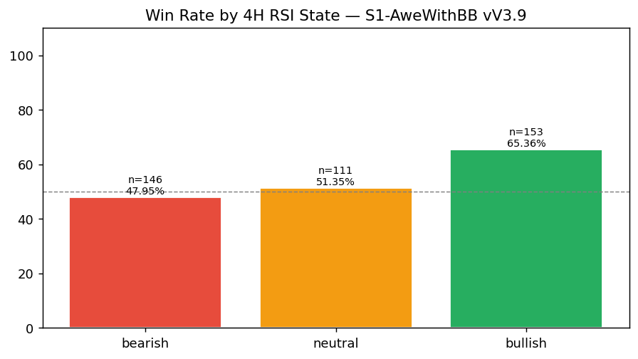
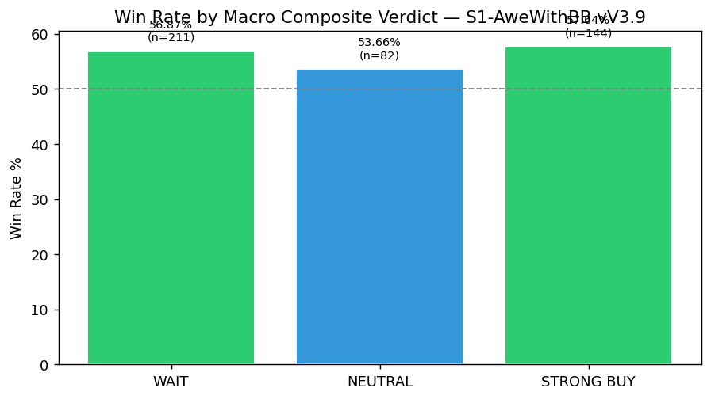
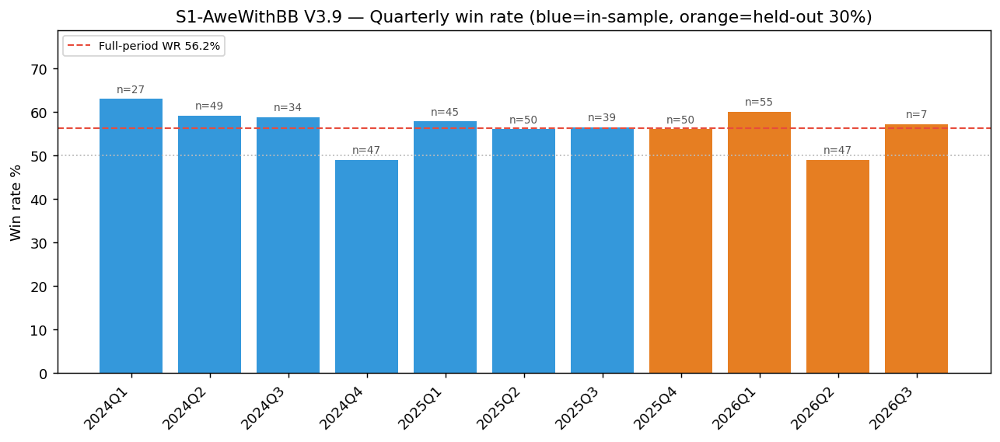

RS-XAUUSD-20260727-001 · XAUUSD · 2026-07-27
S1 V3.9 — Macro composite, 30-minute timing, temporal stability, and full fail-pattern report
在目前的 V3.9 交易匯出資料下，Macro 綜合判定與各個 30 分鐘進場時槽，是否足以支持 S1 建議分數的調整？同一批交易的完整 fail-pattern／BB／DXY／MTF 拆解又顯示什麼？第 4 版另外追加一個問題：V3.9 的回測優勢是否隨時間穩定，還是集中在同一批匯出資料裡較早的一段（這是在有人對 TradingView 開發的策略提出過度配適疑慮之後才加入的）？
Headline Metrics 關鍵數字
Key Findings 重點發現
Macro WAIT 判定下仍然是賺錢的
211 筆符合條件的交易，勝率 56.87%，獲利因子 1.837。證據不支持把 WAIT 當成 S1 的封鎖條件；排序分數是 0（三個判定中的中段），不是負分。
以排序分數法計算，NEUTRAL 才是最弱的 Macro 判定
NEUTRAL 的勝率（53.66%）是三個判定裡最低的，儘管獲利因子最高（1.963）、樣本數也最小（82 筆）——排序分數為 -1，敬陪末座，與先前用收縮平均報酬法算出的 +1.4（原本排第一）方向完全相反。兩種方法讀的是同一批 82 筆交易，會得出相反結論是因為排序依據的統計量不同（勝率 vs. 收縮後的平均報酬）。
亞盤並不是 V3.9 表現較弱的盤別
154 筆交易，勝率 57.79%，獲利因子 1.999。原本沿用的『亞盤獨弱』觀察並不成立；在三個列入計分的盤別中，亞盤的排序分數是 +1，表現最好。
應查對應時槽，而非套用印象
即時分數會查目前 HH:00／HH:30 進場時槽自己的整數排序分數，範圍 -2 至 +2。48 個時槽中有 5 個樣本過小（n<5），一律計 0 分。
主要失敗型態是正常停損，不是立即虧損
197 筆虧損交易中，104 筆（52.8%）是乾淨的 normal_sl 停損出場；immediate_loss 只佔25.9%（51 筆）。這是描述性脈絡，不是即時分數的調整依據。
逆勢（4H 空頭）進場表現較弱
在 4H RSI 呈空頭狀態下進場的 146 筆交易，勝率 47.95%，相對於順勢對齊的 304 筆交易勝率 60.2%。這是描述性脈絡，目前不是即時分數的調整依據。
時間保留集檢定：判定為穩定，未見明顯退化
依進場時間 70/30 切分：樣本內（2024-01-05 至 2025-11-18，n=315）勝率 57.14%、獲利因子 1.886；保留集（2025-11-20 至 2026-07-10，n=135）勝率 54.07%、獲利因子 1.832。保留集勝率落在樣本內 95% 信賴區間 [51.62, 62.49] 之內，獲利因子也維持在 1 以上，因此這條固定規則判定為『穩定』，不是『退化』。這只是對同一份已定案回測做的時間分段檢查，不是重新最佳化的 walk-forward——把它當成『策略沒有過度配適』的證明之前，請先看 results.json 裡 method.temporal_stability_limitation 的完整說明。
匯出資料中最弱的完整季度是 2026Q2，不是 2026Q1
11 個季度的勝率介於 48.94%–62.96% 之間，沒有單調的趨勢。2026Q1 是表現最好的季度（n=55，勝率 60.0%，獲利因子 2.563）；2026Q2 是表現最弱的完整季度（n=47，勝率 48.94%，獲利因子 1.429），但獲利因子仍大於 1。這個季度形狀值得拿去對照實際下單紀錄再確認：如果實盤結果轉弱、但回測本身沒有變，問題更可能出在執行面，而不是策略本身。
Failure Types 失敗型態
虧損以正常停損為主，立即虧損不是主要失敗型態；這是描述性脈絡，不是新的即時規則。

Fail Type Breakdown
| normal sl | 104 | 52.8 |
|---|---|---|
| immediate loss | 51 | 25.9 |
| time bleed | 42 | 21.3 |
30-Minute Entry Slots 進場時槽
時槽只應查當下的個別分數；多數格子的樣本有限，不能把差異擴張成一條新的入場規則。

30-Minute Entry Slot (48 slots)
| 00:00 | 6 | 66.67 | 2.257 | 2 |
|---|---|---|---|---|
| 00:30 | 14 | 64.29 | 2.79 | 1 |
| 01:00 | 8 | 62.5 | 4.673 | 1 |
| 01:30 | 8 | 50 | 1.902 | -1 |
| 02:00 | 12 | 66.67 | 4.131 | 2 |
| 02:30 | 10 | 50 | 0.873 | -1 |
| 03:00 | 6 | 50 | 1.847 | -1 |
| 03:30 | 8 | 75 | 3.048 | 2 |
| 04:00 | 4 | 75 | 5.548 | 0 |
| 04:30 | 9 | 44.44 | 0.804 | -1 |
| 05:00 | 6 | 83.33 | 4.949 | 2 |
| 05:30 | 2 | 100 | — | 0 |
| 06:00 | 0 | — | — | 0 |
| 06:30 | 7 | 57.14 | 1.371 | 0 |
| 07:00 | 4 | 75 | 7.899 | 0 |
| 07:30 | 14 | 57.14 | 2.614 | 0 |
| 08:00 | 9 | 77.78 | 4.756 | 2 |
| 08:30 | 7 | 57.14 | 2.184 | 0 |
| 09:00 | 14 | 64.29 | 1.892 | 1 |
| 09:30 | 15 | 33.33 | 0.496 | -2 |
| 10:00 | 11 | 63.64 | 3.186 | 1 |
| 10:30 | 9 | 66.67 | 2.031 | 2 |
| 11:00 | 10 | 70 | 2.328 | 2 |
| 11:30 | 9 | 44.44 | 1.298 | -1 |
| 12:00 | 12 | 58.33 | 2.074 | 1 |
| 12:30 | 8 | 62.5 | 2.539 | 1 |
| 13:00 | 11 | 36.36 | 0.573 | -2 |
| 13:30 | 5 | 40 | 1.813 | -2 |
| 14:00 | 6 | 50 | 2.309 | -1 |
| 14:30 | 10 | 80 | 4.651 | 2 |
| 15:00 | 6 | 33.33 | 0.498 | -2 |
| 15:30 | 12 | 41.67 | 1.309 | -2 |
| 16:00 | 8 | 50 | 2.292 | -1 |
| 16:30 | 12 | 50 | 1.907 | -1 |
| 17:00 | 6 | 50 | 1.856 | -1 |
| 17:30 | 9 | 55.56 | 1.593 | 0 |
| 18:00 | 2 | 100 | — | 0 |
| 18:30 | 8 | 100 | — | 2 |
| 19:00 | 11 | 45.45 | 1.253 | -1 |
| 19:30 | 5 | 40 | 0.672 | -2 |
| 20:00 | 9 | 44.44 | 1.297 | -1 |
| 20:30 | 10 | 30 | 0.433 | -2 |
| 21:00 | 21 | 61.9 | 1.682 | 1 |
| 21:30 | 18 | 44.44 | 0.783 | -1 |
| 22:00 | 16 | 56.25 | 2.096 | 0 |
| 22:30 | 15 | 60 | 2.017 | 1 |
| 23:00 | 16 | 56.25 | 1.284 | 0 |
| 23:30 | 12 | 41.67 | 0.711 | -2 |
Bollinger Band Zone 布林區位
這是完整診斷的一部分；結果提供脈絡，不單獨構成進場篩選條件。

Bollinger Band Zone
| below lower | 1 | 0 | 0 |
|---|---|---|---|
| near lower | 1 | 0 | 0 |
| lower mid | 8 | 25 | 0.735 |
| near middle | 25 | 28 | 0.896 |
| upper mid | 61 | 57.38 | 1.85 |
| near upper | 40 | 60 | 2.075 |
| above upper | 29 | 79.31 | 6.828 |
DXY Context 美元指數脈絡
DXY 狀態的拆解用來檢查脈絡；不能取代已被撤銷的 Macro 綜合調整。

DXY Regime Bucket
| neutral high(50-70) | 213 | 52.11 | 1.667 |
|---|---|---|---|
| neutral low(30-50) | 201 | 61.19 | 2.136 |
| overbought(>70) | 17 | 52.94 | 1.131 |
| oversold(<30) | 19 | 52.63 | 2.485 |
Multi-Timeframe Alignment 多時間框對齊
多時間框對齊能描述表現落差，但目前不直接改變即時分數。

Multi-Timeframe Alignment
| 0/3 None | 157 | 48.41 | 1.194 |
|---|---|---|---|
| 1/3 Weak | 216 | 56.48 | 2.162 |
| 2/3 Moderate | 74 | 71.62 | 3.139 |
| 3/3 Full | 3 | 66.67 | 3.003 |
4H Trend State 四小時趨勢
4H 空頭時的逆勢進場較弱；它是待持續觀察的脈絡，而非這次新增的執行條件。

4H Trend State
| bearish | 146 | 47.95 | 1.453 |
|---|---|---|---|
| bullish | 153 | 65.36 | 2.499 |
| neutral | 111 | 51.35 | 1.696 |
Macro Verdict 綜合判定
WAIT 仍然賺錢、NEUTRAL 才較弱；原本把 Macro 判定放進 S1 分數的做法沒有撐住。

Macro Verdict
| NEUTRAL | 82 | 53.66 | 1.963 | -1 |
|---|---|---|---|---|
| STRONG BUY | 144 | 57.64 | 1.911 | 1 |
| WAIT | 211 | 56.87 | 1.837 | 0 |
Chronological Holdout 時間保留集
保留集表現仍在樣本內範圍，固定規則判定為穩定；這不是重新最佳化的 walk-forward 證明。

Chronological Holdout by Quarter
| 2024Q1 | 27 | 62.96 | 2.193 |
|---|---|---|---|
| 2024Q2 | 49 | 59.18 | 1.898 |
| 2024Q3 | 34 | 58.82 | 2.149 |
| 2024Q4 | 47 | 48.94 | 1.077 |
| 2025Q1 | 45 | 57.78 | 1.691 |
| 2025Q2 | 50 | 56 | 2.208 |
| 2025Q3 | 39 | 56.41 | 1.923 |
| 2025Q4 | 50 | 56 | 1.87 |
| 2026Q1 | 55 | 60 | 2.563 |
| 2026Q2 | 47 | 48.94 | 1.429 |
| 2026Q3 | 7 | 57.14 | 2.608 |
詮釋與實務意義
這份研究做的事情很單純：把兩條已經活在即時分數裡好幾個月的規則（Macro 綜合判定、30 分鐘時槽）攤開來，用同一批 450 筆 V3.9 交易重新檢驗一次。結果是兩條都撐不住——Macro 的 WAIT 判定其實還是賺錢的，NEUTRAL 才是三個判定裡最弱的一個，跟原本用於分數調整的排序方向相反；30 分鐘時槽則需要對照當下的時槽分數表，而不是套用一套固定印象。同一份資料另外拆出的 fail-pattern、BB、DXY、MTF、時間穩定性等面向，是把整份 V3.9 匯出資料能看到的東西盡量看完整，而不是只挑對假設有利的角度。
限制與注意事項
- Macro 覆蓋率為 97.11%（437／450 筆有對應的 Macro 讀值），13 筆缺值不計入 Macro 相關統計，不會用舊值或估計值填補。
- 時間穩定性檢定是對「同一份已經定案」的 TradingView 策略測試匯出檔做時間分段／保留集切分，不是重新最佳化的 walk-forward：Pine Script 的策略邏輯全程沒有在任何子區間重新跑過或重新調參。它能看出目前記錄的勝率／獲利因子是穩定的還是集中在較早的一段；它不能證明「如果一開始只有早期資料，參數會被選成一樣的樣子」。
- normal_sl 與逆勢（4H 空頭）進場的兩項發現是描述性脈絡，目前不是即時分數的調整依據——它們說明了「為什麼」，不是「該怎麼扣分」。